한 그릇의 냉면부터
든든한 한끼까지
시그니처 메뉴
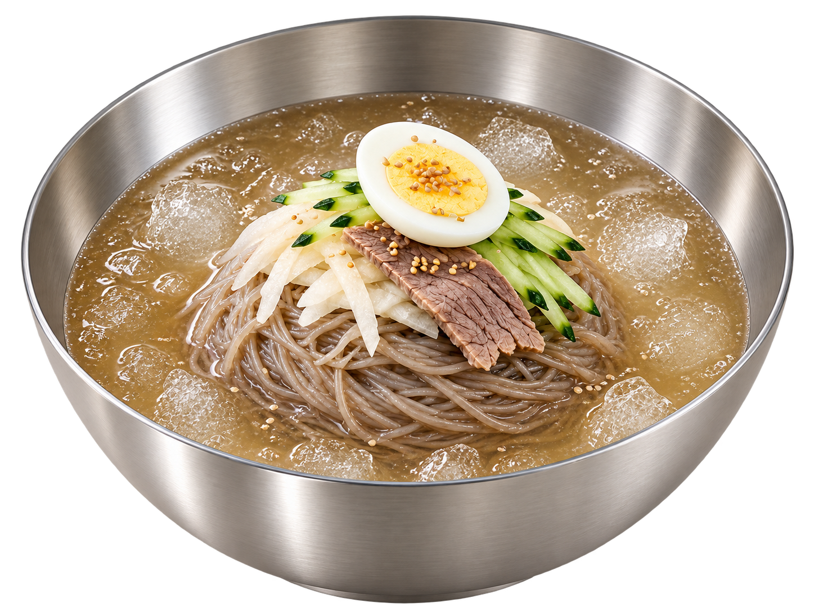
물냉면
담백한 육수와 쫄깃한 면이
어우러진 시원하고 깔끔한 냉면
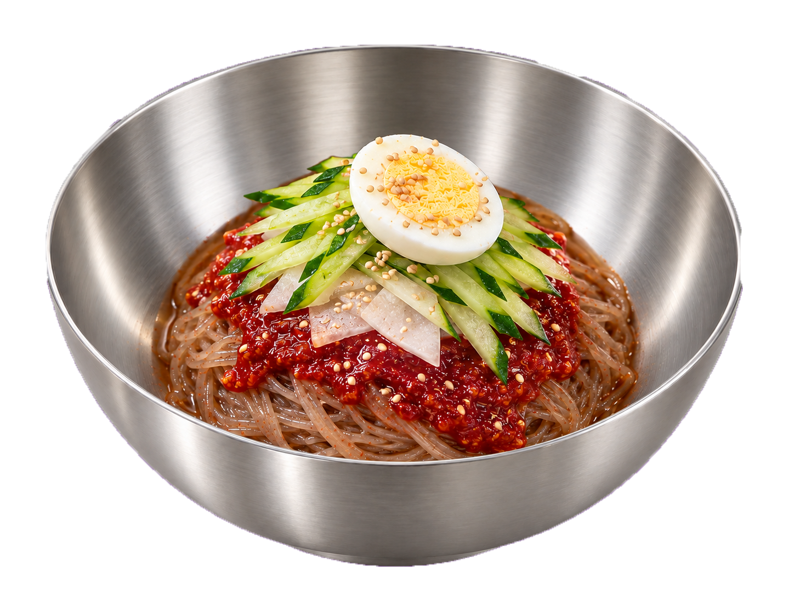
비빔냉면
매콤한 양념과 쫄깃한 면이
어우러진 매콤하고 감칠맛 나는 냉면
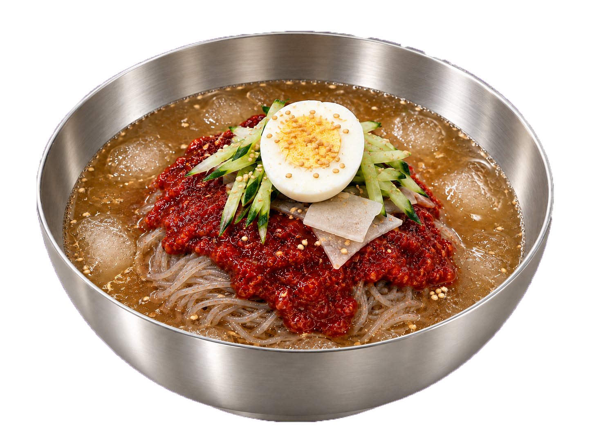
물비빔냉면
시원한 육수와 매콤한 양념을
함께 즐기는 새콤하고 깊은 맛의 냉면
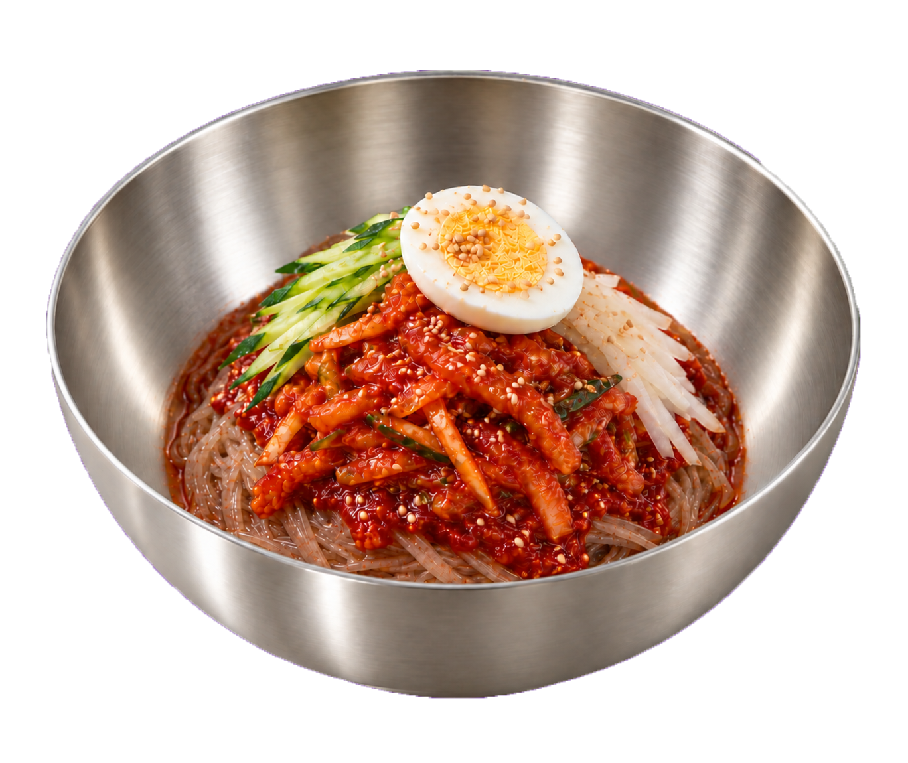
회냉면
매콤한 양념과 쫄깃한 회가
어우러진 풍성한 맛의 냉면
따뜻한 메뉴
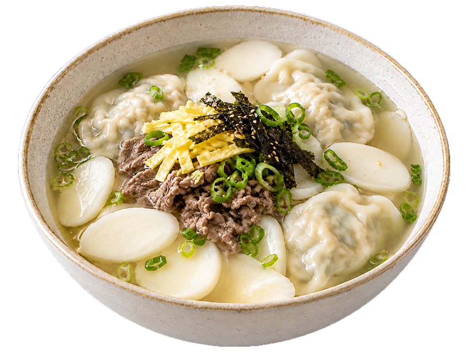
떡만둣국
담백한 육수에 쫄깃한 떡과
손만두를 넣어 든든하게 즐기는 한 그릇
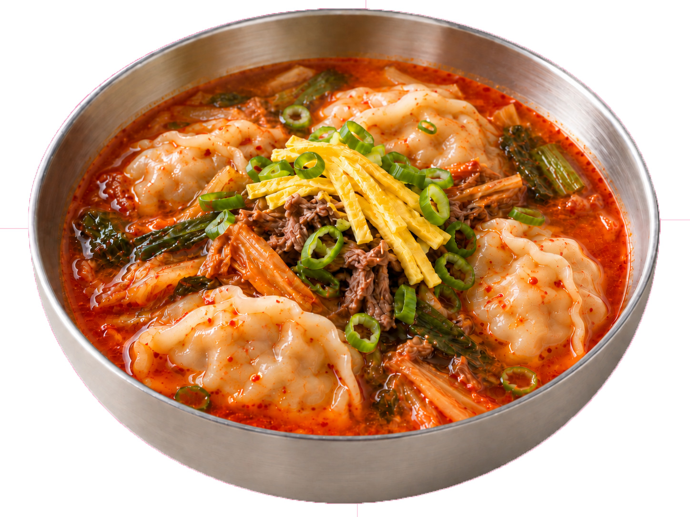
얼큰해장만둣국
얼큰하고 깊은 육수에 속을 채운
만두를 더해 개운하게 즐기는 만둣국
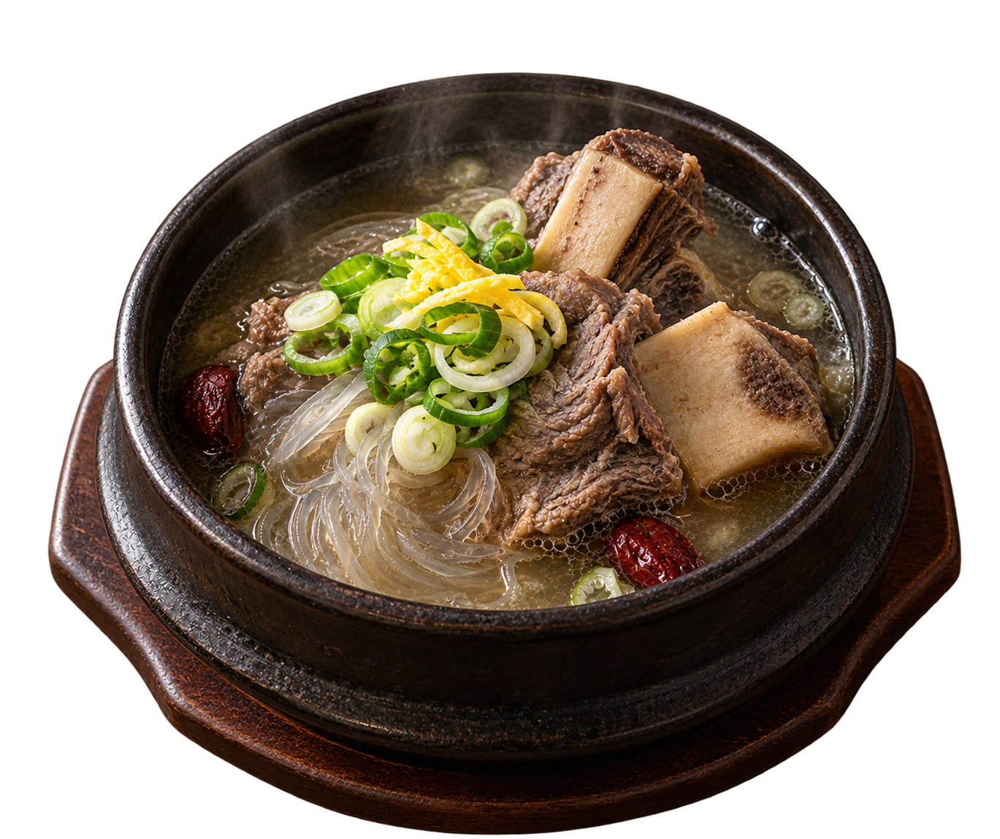
갈비탕
부드럽게 익힌 갈비와 깊고
담백한 육수가 어우러진 든든한 한 그릇
안주류
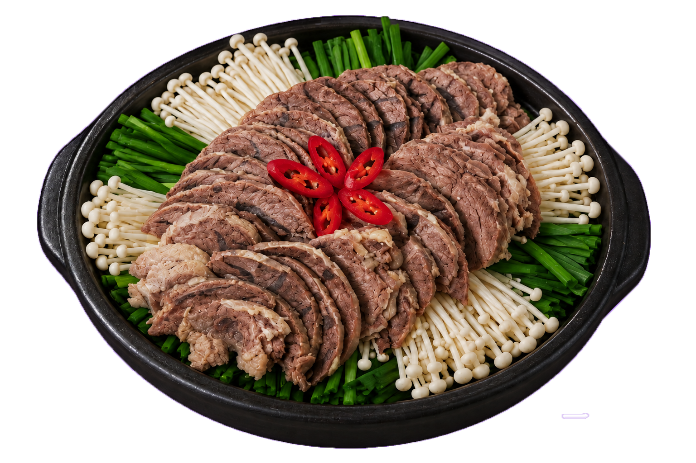
수육전골
부드러운 수육과 채소를
깊은 육수에 담아 따뜻하게 즐기는 전골
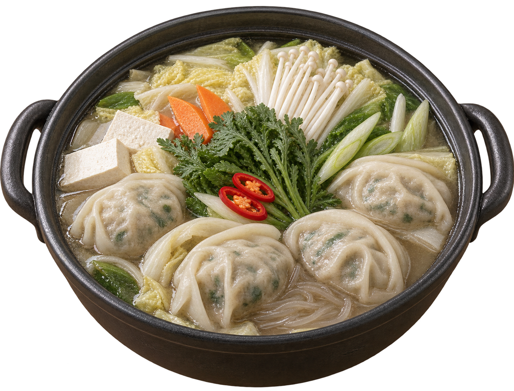
만두전골
속이 꽉 찬 손만두와 채소를
담백한 육수와 함께 즐기는 전골
사이드 메뉴
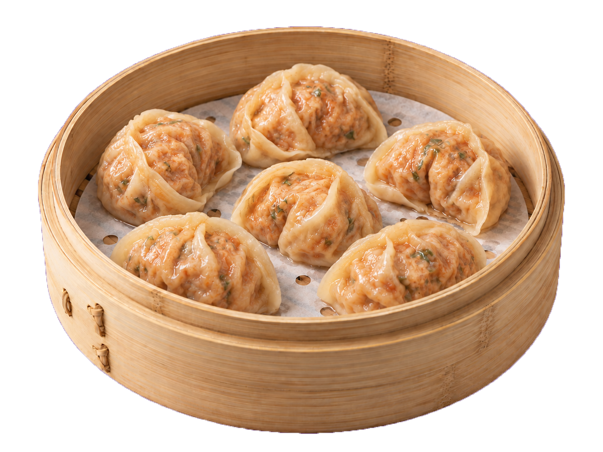
김치만두
잘 익은 김치와 다양한 재료를
넣어 매콤하고 담백하게 빚은 만두
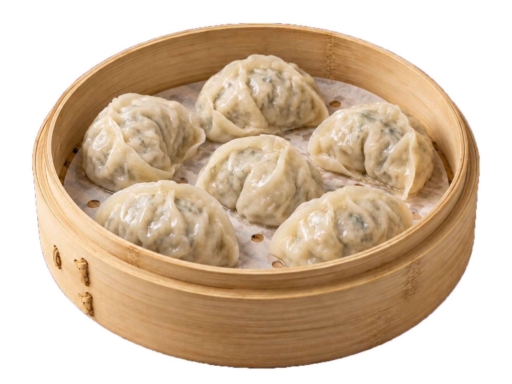
고기만두
돼지고기와 신선한 채소를 정성껏
빚어 담백하고 풍성한 맛을 담은 만두
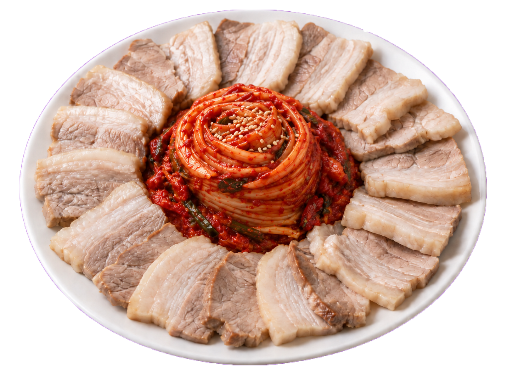
수육
부드럽게 삶아낸 돼지고기에
담백한 맛을 살린 정갈한 수육